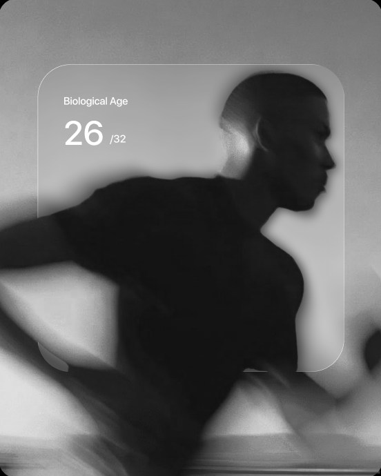

Home sample collection
At your door. A trained phlebotomist, a morning slot you choose.
One blood draw at home. 150 biomarkers read into a digital twin, a protocol written from it, a doctor to walk you through it, and three months of Vanta HealthOS.
Start DayzeroPick a morning slot. Arrive fasted. The sample is collected at home and processed by an accredited partner lab. Results land inside Vanta HealthOS with every marker explained, in range, in plain language.
150 biomarkers map onto your digital twin, organ by organ, beside what Apple Health already knows about your sleep, training and recovery. A doctor walks you through the results. Then the protocol is written from them: what to eat, when to move, what to take, when to wind down.
Three months of Vanta HealthOS, included. One plan every morning, built from your twin, rewriting itself as your data changes. And member pricing on the store and the marketplace for everything the protocol asks you to buy.
From the draw to the daily plan, everything Dayzero needs is inside the ₹11,999.
At your door. A trained phlebotomist, a morning slot you choose.
150 biomarkers in one draw. Metabolic, lipids, thyroid, liver, kidney, iron, the full vitamin panel, hormones, heavy metals, inflammation and food intolerance. Male and female variants.
Walked through, not handed over. A doctor takes you through your results.
A model of you. Built from your blood and your Apple Health data, organ by organ.
The OS, included. Labs, twin, protocol, Ask Vanta and Fuel, for ninety days. The twin keeps learning from every night of sleep and every session.
The day, decided. Food, movement, stack and sleep, each action with its reason.
On the store and the marketplace. Exclusive discounts on products and everything the protocol asks for.
Twelve systems, one draw. Every marker is explained in range inside the app, and anything that needs a clinician is routed to one.
A checkup hands you a PDF. Dayzero hands you the day.

One blood draw at home. 150 biomarkers read into a digital twin, a protocol written from it, a doctor to walk you through it, and three months of Vanta HealthOS.
Results, twin, protocol and consultation live inside Vanta HealthOS on iPhone.
Yes. Arrive fasted: nothing but water for 8 to 10 hours before the morning slot you pick.
A trained phlebotomist comes to your home at the slot you choose and collects the sample. It takes a few minutes.
Straight into Vanta HealthOS on your iPhone, with every marker explained in range, in plain language.
A doctor walks you through your results, what they mean for you, and what the protocol written from them asks of you.
Your HealthOS plan keeps running until the three months end. After that you can continue as a member or take your results with you.
No. Vanta HealthOS is a wellness product and does not diagnose, treat or prevent any disease. Anything that needs a clinician is routed to one.
Vanta HealthOS is on iPhone for now. Android is on the way.